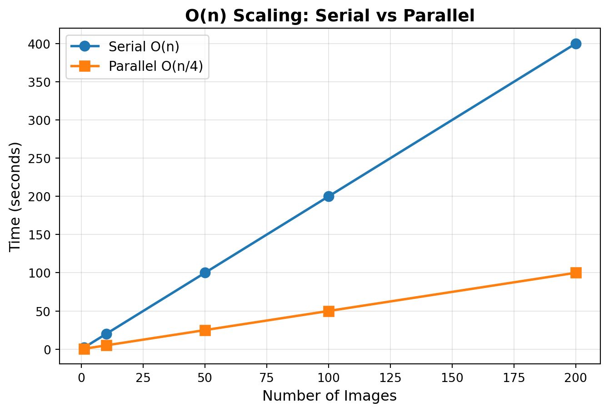
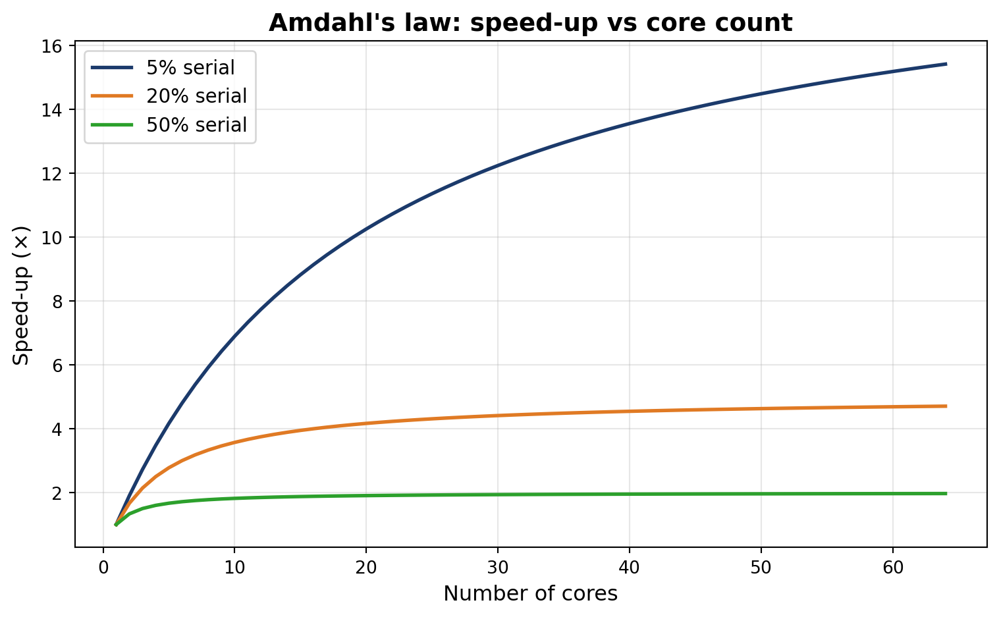

0
1
4
9
16
25Lecture 21 - Parallel Computing Fundamentals
get_wdi()requests and BeautifulSoup insteadWorth noticing: the parquet files we wrote in Module 06 are exactly the format Dask reads
map function and embarrassingly parallel problemsjoblib and concurrent.futures for single-node parallelismDask for scalable computing
dask.delayed for custom pipelinesmap functionmap later in this lecturemap function in its standard library, so you never have to write mine:joblib for parallel computingmap call is independent, so nothing stops us running the steps at the same timejoblib gives us two functions for thatParallel(n_jobs=k) runs k tasks at the same timedelayed(f) wraps f so that joblib can schedule the call instead of running it immediatelyn_jobs=-1 asks joblib to use all available CPU coresbar function and foo array from before:joblib starts six workers and gives each one a different element of foocalculation runs ten heavy operations on ten million random numbers
Each call is fully independent of the others, which makes this problem embarrassingly parallel
We time three things with %timeit: one call as a baseline, four calls in serial, and four calls in parallel
One call:
concurrent.futures: the standard-library optionconcurrent.futures comes with PythonProcessPoolExecutor, which works like joblibThreadPoolExecutormap interface: a function and an iterablefrom concurrent.futures import ThreadPoolExecutor
import requests
urls = [
"https://api.worldbank.org/v2/country/BRA/indicator/SP.POP.TOTL?format=json",
"https://api.worldbank.org/v2/country/IND/indicator/SP.POP.TOTL?format=json",
"https://api.worldbank.org/v2/country/USA/indicator/SP.POP.TOTL?format=json",
]
def fetch(url):
return requests.get(url).json()
with ThreadPoolExecutor(max_workers=3) as executor:
results = list(executor.map(fetch, urls))get_wdi() pattern, with all three requests now running at the same timesklearn calls joblib internally whenever you set n_jobs=-1:from sklearn.datasets import load_digits
from sklearn.model_selection import GridSearchCV
from sklearn.svm import SVC
import time
digits = load_digits()
param_grid = {"C": [0.1, 1, 10], "gamma": [0.001, 0.01]}
start = time.time()
search = GridSearchCV(SVC(), param_grid, cv=3, n_jobs=-1)
search.fit(digits.data, digits.target)
elapsed = time.time() - start
print(f"Best score: {search.best_score_:.3f}")
print(f"Time: {elapsed:.2f}s (all cores)")Best score: 0.976
Time: 2.59s (all cores)concurrent.futures suits I/O parallelism, and anywhere you cannot install extra packages| Scenario | Tool |
|---|---|
| sklearn / numeric loops | joblib (n_jobs=-1) |
| Download many files | ThreadPoolExecutor |
| CPU-heavy, no dependencies | ProcessPoolExecutor |
| Bigger than RAM, clusters | Dask (next section) |
Every tool does the same thing: split the work, run it on separate workers, then collect the results
calculation function called on n inputs is O(n)import matplotlib.pyplot as plt
import numpy as np
# Simulate processing times
num_images = np.array([1, 10, 50, 100, 200])
sequential_time = num_images * 2 # 2 seconds per image
parallel_time = (num_images * 2) / 4 # 4 cores, ideal speedup
plt.figure(figsize=(8, 5))
plt.plot(num_images, sequential_time, 'o-', label='Serial O(n)', linewidth=2, markersize=8)
plt.plot(num_images, parallel_time, 's-', label='Parallel O(n/4)', linewidth=2, markersize=8)
plt.xlabel('Number of Images', fontsize=12)
plt.ylabel('Time (seconds)', fontsize=12)
plt.title('O(n) Scaling: Serial vs Parallel', fontsize=14, fontweight='bold')
plt.legend(fontsize=11)
plt.grid(True, alpha=0.3)
plt.show()
p cores, an O(n) problem becomes O(n/p + overhead)n independent calculations qualifiesn separate inputs qualifies tooParallelism never changes the Big O class. It divides the constant in front of it. An O(n²) algorithm running on eight cores is still an O(n²) algorithm; you only reach “too slow” a little later
n = 100_000 the same code is 10 billion operations, and no core count rescues thatpip install joblib numpy if you have not done so alreadyimport matplotlib.pyplot as plt
import numpy as np
cores = np.arange(1, 65)
serial_fracs = [0.05, 0.2, 0.5]
labels = ["5% serial", "20% serial", "50% serial"]
colours = ["#1B3A6B", "#E07A24", "#2CA02C"]
plt.figure(figsize=(8, 5))
for s, lab, c in zip(serial_fracs, labels, colours):
speedup = 1 / (s + (1 - s) / cores)
plt.plot(cores, speedup, label=lab, linewidth=2, color=c)
plt.xlabel("Number of cores", fontsize=12)
plt.ylabel("Speed-up (×)", fontsize=12)
plt.title("Amdahl's law: speed-up vs core count",
fontsize=14, fontweight="bold")
plt.legend(fontsize=11)
plt.grid(True, alpha=0.3)
plt.tight_layout()
plt.show()
| Task | Use | Why |
|---|---|---|
| Number crunching | Processes (joblib, ProcessPoolExecutor) |
Sidesteps the GIL |
| Downloading many URLs | Threads (ThreadPoolExecutor) |
GIL released while waiting |
| NumPy / Polars / DuckDB | Either or neither | Heavy work runs in C/Rust, outside the GIL |
sklearn with n_jobs=-1 |
Processes (via joblib) |
Each fold trains independently |
joblib parallelises your functions and leaves the data where it was. Dask chunks the data itself, so a Dask array or DataFrame can be larger than your RAM
a.sum(), a.mean() and slicing all work as you expecta is a lazy wrapper around the original data, split into 100 by 100 chunks.compute().compute()a to get the first 10 rows of the sixth column.compute() method is what finally asks Dask for the numbers+, *, exp and log behave normallysum(), mean() and std()Not a rule: Dask wins here because sqrt and sin split cacross chunks. On data that fits in memory, building the graph and moving chunks often makes Dask slower. Run %timeit to see the difference
head(), display data without being asked| name | id | x | y | |
|---|---|---|---|---|
| timestamp | ||||
| 2000-01-01 00:00:00 | Jerry | 965 | -0.30 | -0.50 |
| 2000-01-01 00:00:01 | Victor | 1033 | 0.51 | -0.30 |
| 2000-01-01 00:00:02 | Sarah | 1006 | -0.76 | 0.96 |
| 2000-01-01 00:00:03 | Dan | 961 | -0.21 | 0.36 |
| 2000-01-01 00:00:04 | Ursula | 1054 | -0.90 | -0.73 |
y > 0 and take the standard deviation of x within each groupDask Series Structure:
npartitions=1
float64
...
Dask Name: getitem, 8 expressions
Expr=(((Filter(frame=ArrowStringConversion(frame=Timeseries(dc824a3)), predicate=ArrowStringConversion(frame=Timeseries(dc824a3))['y'] > 0))[['name', 'x']]).std(ddof=1, numeric_only=False, split_out=None, observed=True))['x']df3 still shows no numbers.compute() runs the plan and hands back a pandas Series.persist() keeps a computed result in memoryx and the maximum of y within each name.persist() computes it once and holds it in memory.compute() then returns an ordinary pandas DataFrame for the last few stepsLoad and filter in Dask, aggregate down to something small, call .compute(), then finish in pandas
import dask
import dask.dataframe as dd
df = dask.datasets.timeseries()
# Step 1-2: filter and aggregate with Dask
summary = (
df[df.x > 0]
.groupby("name")
.agg({"x": "mean", "y": "std"})
)
# Step 3: bring to Pandas
pdf = summary.compute()
# Step 4: use Pandas normally
pdf.sort_values("x", ascending=False).head(5)| x | y | |
|---|---|---|
| name | ||
| Tim | 0.5 | 0.58 |
| Norbert | 0.5 | 0.58 |
| Kevin | 0.5 | 0.58 |
| Wendy | 0.5 | 0.58 |
| Quinn | 0.5 | 0.58 |
pip install dask if you have not alreadynumpy and dask.arraysize = 10_000_000. Use a smaller number if your laptop is short on memorychunks=100_000da.sqrt(x**2).mean().compute() with %timeitchunks=2_000_000chunks=5_000_000import numpy as np
import dask.array as da
size = 10_000_000
# Dask with SMALL chunks
da_data_small = da.random.random(size, chunks=100_000) # 100 chunks
%timeit da.sqrt(da_data_small**2).mean().compute()
# Dask with MEDIUM chunks
da_data_medium = da.random.random(size, chunks=2_000_000) # 5 chunks
%timeit da.sqrt(da_data_medium**2).mean().compute()
# Dask with LARGE chunks
da_data_large = da.random.random(size, chunks=5_000_000) # 2 chunks
%timeit da.sqrt(da_data_large**2).mean().compute()name_function argument below turns one DataFrame into one file per daydata/*.csv gives us 30 files for January 2000data directory now holds 30 CSV files, one per day in January 2000, and 182 MB in totaldd.read_csv takes a glob pattern and treats the whole set as one DataFrame| Feature | CSV | Parquet |
|---|---|---|
| Storage | Row-based | Column-based |
| Compression | None | Snappy/gzip |
| Column selection | Reads all | Reads only needed |
| Data types | Text only | Typed (int, float, date) |
| Our January 2000 data | 182 MB | 86 MB |
CSV is not obsolete: reach for parquet when you have many columns and query only a few, or when the file passes 100 MB. Stay with CSV for small files, one-off exports, and anything a collaborator will open in Excel
dask.delayed does exactly that, and it works on functions you have already written@dask.delayed decorator above the function@dask.delayed
def delayed_calculation(size=10000000):
arr = np.random.rand(size)
for _ in range(10):
arr = np.sqrt(arr) + np.sin(arr)
return np.mean(arr)
results = []
for _ in range(4):
results.append(delayed_calculation())
# Compute all results at once
%timeit final_results = dask.compute(*results)611 ms ± 25.6 ms per loop (mean ± std. dev. of 7 runs, 1 loop each)delayed_calculation() builds a task instead of running one, so dask.compute(*results) is what triggers the work@dask.delayed
def generate_data(size):
return np.random.rand(size)
@dask.delayed
def transform_data(data):
return np.sqrt(data) + np.sin(data)
@dask.delayed
def aggregate_data(data):
return {
'mean': np.mean(data),
'std': np.std(data),
'max': np.max(data)
}
# Compare execution
sizes = [1000000, 2000000, 3000000]
# Dask execution
dask_results = []
for size in sizes:
data = generate_data(size)
transformed = transform_data(data)
stats = aggregate_data(transformed)
dask_results.append(stats)
%timeit dask.compute(*dask_results)27.6 ms ± 323 μs per loop (mean ± std. dev. of 7 runs, 10 loops each)dask.visualize() draws the graph without running any of itDask sees all nine tasks before it runs any of them. The three branches never touch each other, so they go to separate workers
localhost:8787dask.distributed.Client() opens a diagnostics dashboard on port 8787generate_data, transform_data and aggregate_dataWhite space in a row means that worker had nothing to do. Large gaps usually mean your chunks are too big, so there are fewer tasks than workers
The Dask dashboard at localhost:8787 while this computation ran on my laptop
%timeit and cProfile will tell you where the time goes, and Amdahl’s law tells you what that share is worth.compute() and .persist() sparingly: every call triggers execution, so batch the work into onechunks='auto'The mistake I see most often: students parallelise before they profile. Run %timeit first. If the hot spot turns out to be disk reads or an \(O(n^2)\) loop, more cores will not save you, and you will have spent an afternoon finding that out
map, embarrassingly parallel problems, and joblib for the easy casesconcurrent.futures ships with Python: ProcessPoolExecutor for CPU work, ThreadPoolExecutor for waitingdask.delayed parallelises functions you have already written, and dask.visualize shows the plan| Engine | Language | Parallel? | Out-of-core? |
|---|---|---|---|
| pandas | Python/C | Single-threaded | No |
| Polars | Rust | All cores | Yes (streaming) |
| DuckDB | C++ | All cores | Yes |
| Dask | Python | All cores + clusters | Yes |
tutorials/04-duckdb-sql-tutorial.qmd44.8 ms ± 475 μs per loop (mean ± std. dev. of 7 runs, 10 loops each)1.98 s ± 24.2 ms per loop (mean ± std. dev. of 7 runs, 1 loop each)square(x) finishes so fast that joblib’s process-spawning overhead swamps the work. Parallel computing pays off when each task is heavymean(sqrt(x^2)) at four chunk sizes45.1 ms ± 503 μs per loop (mean ± std. dev. of 7 runs, 10 loops each)15.5 ms ± 1.11 ms per loop (mean ± std. dev. of 7 runs, 100 loops each)21.3 ms ± 298 μs per loop (mean ± std. dev. of 7 runs, 10 loops each)32.7 ms ± 1.35 ms per loop (mean ± std. dev. of 7 runs, 10 loops each)